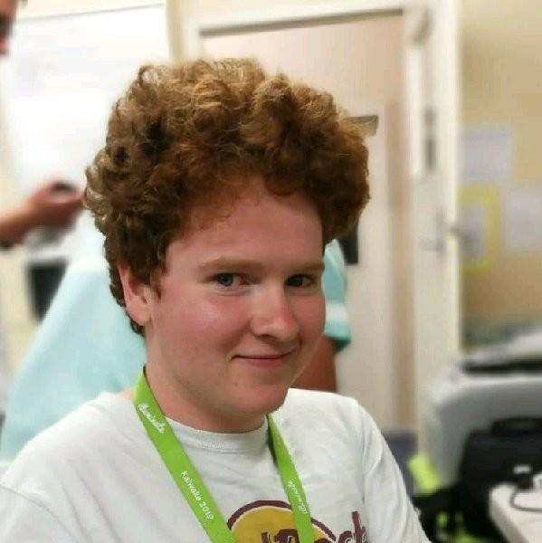
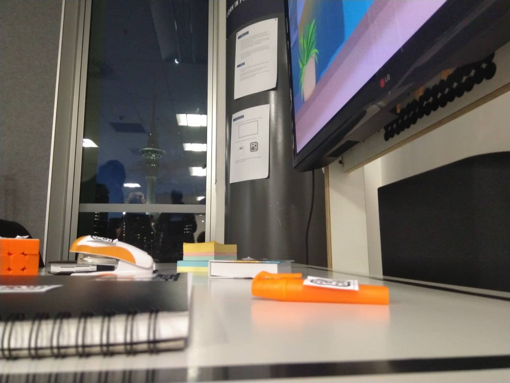
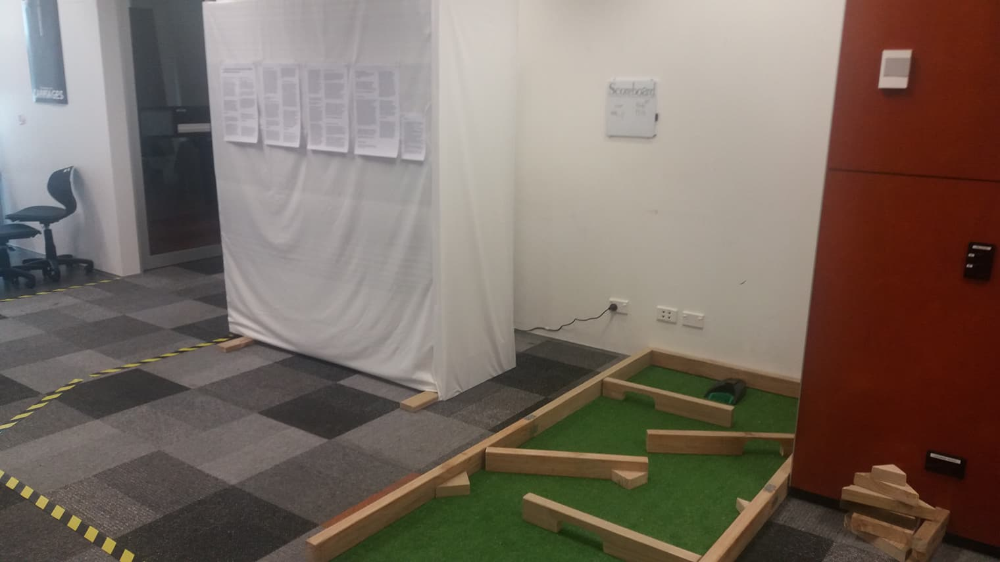
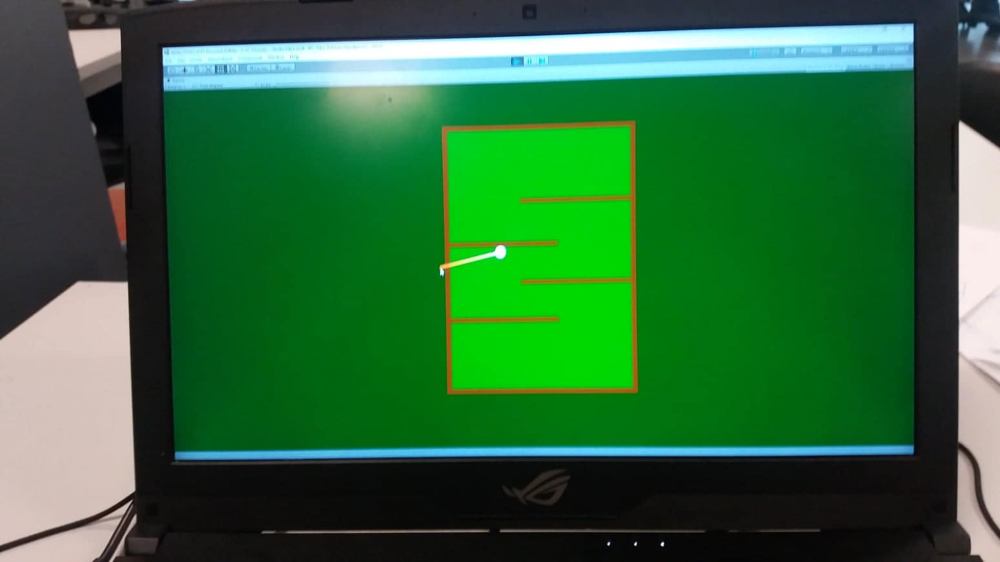
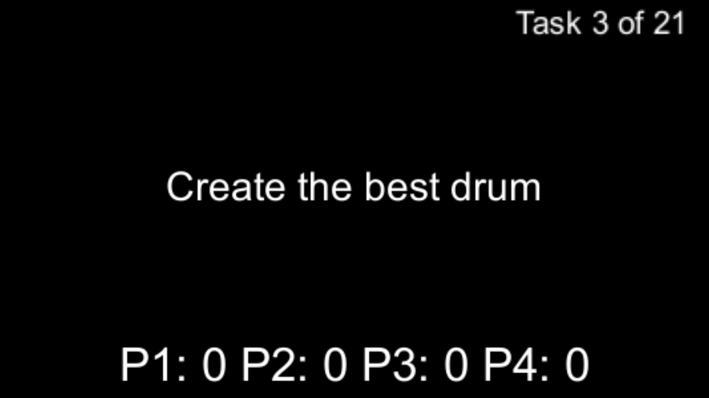
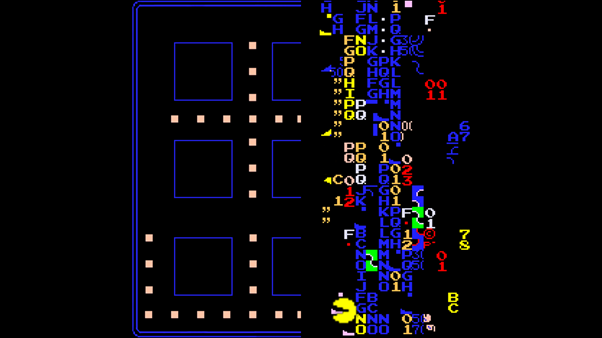
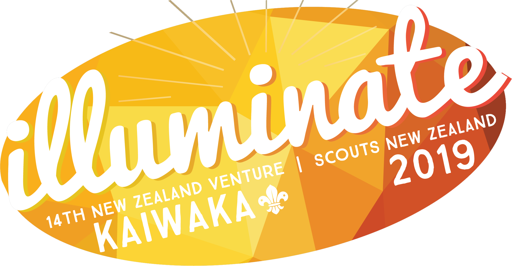
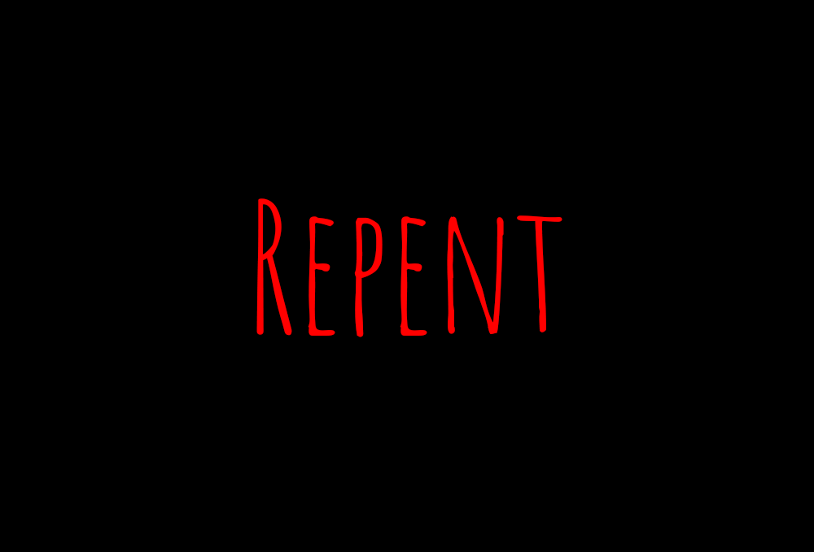

Liam Coll
About Me
3rd year student of Creative Technologies at AUT University in Auckland, New Zealand. I create projects that bring together multiple disciplines, working efficiently in a team to create outcomes that would not be achieved using traditional methods. My skills include:
- Creative Thinking and Problem-Solving
- Unity Development
- Game Design
- Arduino Programming
- Video Editing
My Work Experience
- Casual Project Support at Nanogirl Labs (January 2020 - Present).
Assisted with the coordination and execution of a weekend-long event, and assisted wherever else I could, such as video editing, production assistant on a film set, office planning etc. - Event Service Attendant at Auckland Live (February 2018 - Present).
In this role I mostly work behind the bar at three of Auckland's largest theaters, and I also work as an usher, scanning tickets and seating patrons. From working in this role I learnt many skills such as customer service, teamwork, and working efficiently in a fast paced environment. - National Liturgy Office, Auckland Diocese (2018).
Worked as general tech support in the National Liturgy Office, updating and uploading documents to their website, and also assisting with the production of documents.
Education
- Graduated St Peters College, Auckland in 2017 with an overall NCEA Merit endorsement.
- Halfway through a bachelors degree in Creative Technologies from AUT University
- Went on a student exchange to Edinburgh Napier University in Edinburgh, Scotland during the second half of 2019. Through this exchange I got to travel the world and make international connections as well as gaining alternative perspectives on my work and the world.
Projects
-
Work in Progress
My final project for my third semester in Bachelor of Creative Technologies (BCT).
For this project I took on a team leader role as well as acting as lead technician. I used the program ReactiVision working in tandem with Unity to create an immersive digital display which was altered depending on the presence and location of objects on the table in front of the user.
To see the project in action see the video here and for full details regarding concept and development see the above link.
-
Par-Ticipation
My final project for my second semester in Bachelor of Creative Technologies (BCT). The concept behind this project was to investigate peoples attitudes to play through the different mediums of digital and physical. Two users could play a game of mini-golf against each other, one playing physically and one playing digitally. For this project I acted as the lead developer for the digital end of our digital-physical relationship. For full details regarding concept and development see the above link.
Games
-
Unfair Tactics
A game all about bending the rules and winning by any means possible.
Download the game here and read the report (which goes in depth into the concept and context) here -
Glitched
A game that explores retro gaming and their historic glitches. Download it here and read the documentation here
Video Development
-
Illuminate 2019 Recap Video
I assisted in the production of the recap video for Illuminate 2019, the 14th New Zealand Venture for Scouts NZ
I filmed about half of the footage and edited all of it. -
Repent
An interactive short horror film created with Eko studios. I took the role of team leader, directed, shot and edited the first and final scene(the 'bad' ending)